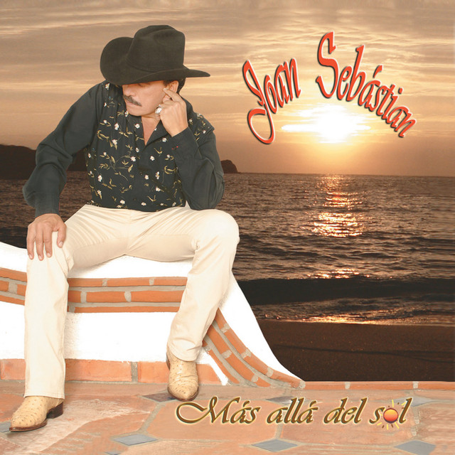
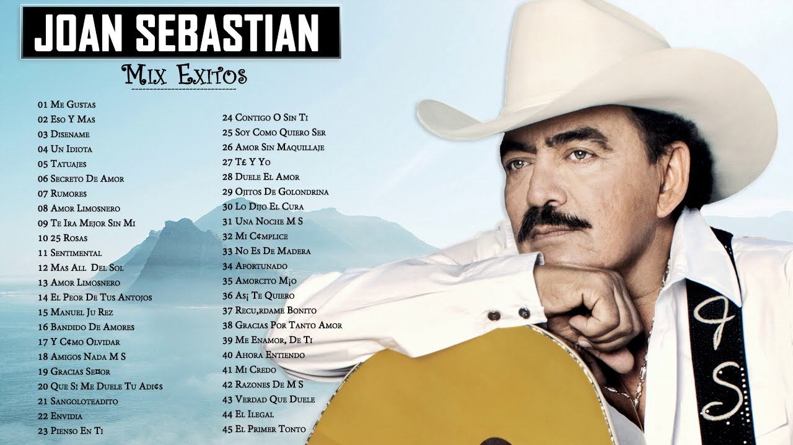

Tatuajes |
||
Artista: Joan Sebastian |
 | Fecha de publicación: 1996 |
Género: Regional mexicana |
Discográfica: Musart - Balboa |
|
Al 95% le gustó este álbum |
 | Escúchalo en Spotify, Youtube Music, Apple Music, Deezer |
Canciones: Qué No Te Asombre, Un Nuevo Nido, Tatuajes, Me Enamoré De Ti, Experto En Fracasos (Contando Penas) |
Aunque Me Duela El Alma, Enamorarse Así, El Muchacho Triste |
|